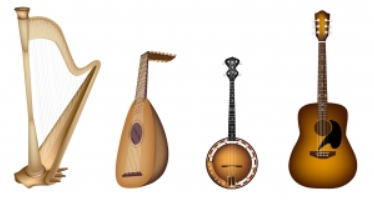

Musica
La música contiene dos elementos: el material acústico y la idea intelectual. Ambos no se hallan yuxtapuestos como forma y contenido, sino que se combinan, en la música, para formar una imagen unitaria. Para convertirse en vehículo de la idea intelectual, el material acústico experimenta una preparación pre-musical, mediante un proceso de selección y ordenamiento.
La música contiene dos elementos: el material acústico y la idea intelectual. Ambos no se hallan yuxtapuestos como forma y contenido, sino que se combinan, en la música, para formar una imagen unitaria. Para convertirse en vehículo de la idea intelectual, el material acústico experimenta una preparación pre-musical, mediante un proceso de selección y ordenamiento.
A continuación ofrecemos una pequeña clasificación de los distintos instrumentos ordenados en familias
Estos son los instrumentos de cada familia musical
Cuerda Frotada

-
Violin
-
Viola
-
Violonchelo
-
Contrabajo
Cuerda Pulsada
-
Arpa
-
Laud
-
Banjo
-
Guitarra
Viento Metal

-
Corneta
-
Tuba
-
Trompeta
-
Trompa
-
Trombón
Viento Madera

-
Fagot
-
Saxofon
-
Oboe
-
Clarinete
-
Flauta